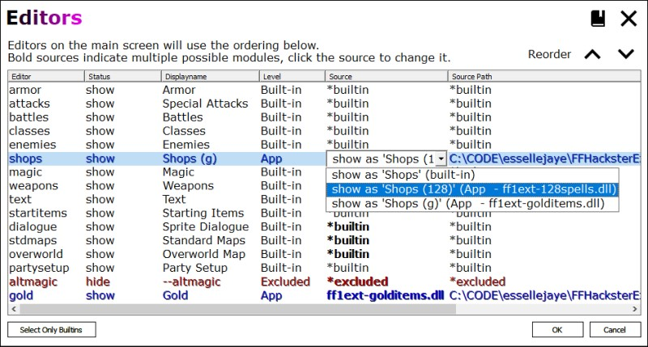
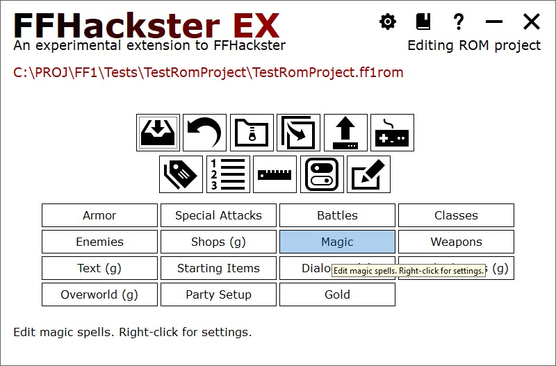
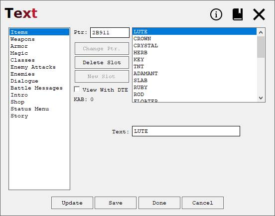
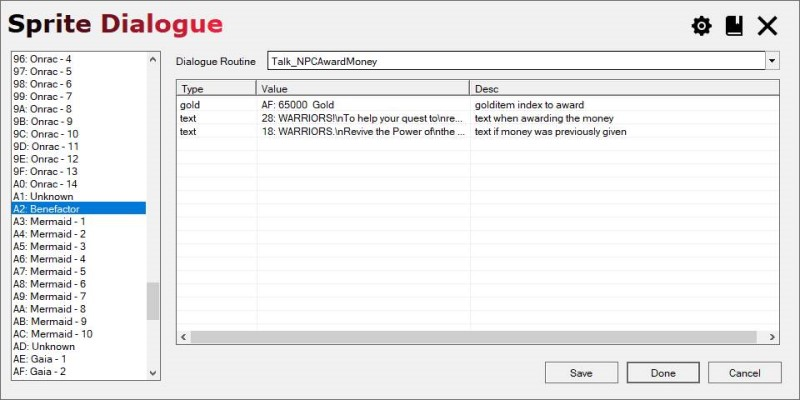
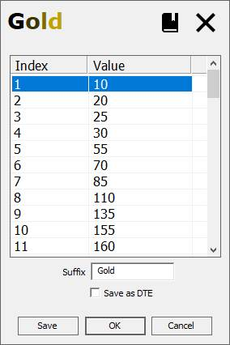

Extensions
FFHacksterEx supports extending the program via DLLs. It's possible to write one or more DLLs and
FFHacksterEx can load them when a project loads and call editors in those DLLs. The interface for
this is unfortunately not the best, but it does work. Part of the problem is that the code is
written in C++, which has no standard ABI (application binary interface), so taking objects across
process boundaries is non-portable and can result in bad data, program crashes, etc.
[UPDATE] This has been ameilorated for Microsoft Visual C++ users, as MSVC 2015, 2017, and 2019
now ship with ABI compatibility. Unforunately, I wrote this before I knew about that and have not
had the time to go back and rewrite the extensions interface. I wanted to mention that here in case
anyone forks this project.
The inteface currently uses a single function:
The hard details are in the following files (and it's messy, unfortunately):typedef char* (*InvokeFunc)(const EditorInterop * ei);
| Project | File | Use |
|---|---|---|
| ff1-coredefs | EditorInterop.h | Defines the prototype for the Invoke function, the structure used with it, and supported command verbs. |
| ff1-coredefs | Editors.h/cpp | Defines the editor structs, classes, and functions used for built-in and custom editors. |
| ff1-utils | FFHExtensionModule.h/cpp | Defines a base class used to implement supporting functionality common to all extensions. |
You'll make whatever changes you need to make the assembly or ROM, then make corresponding changes in an
extension DLL. FFHEx can then load that extension and use the new and/or overridden editors to modify
the altered ROM or assembly source code.
The reference project, GoldItems, provides an example of how to implement an extension.
You will need both the extension (source code or DLL) and the game (FFHEx project or patched ROM)
to use FFHacksterEx with it.
To use an extension DLL, place it into a location supported by FFHEx (more on that below). Then open
the project with FFHEx. If the DLL is not already associated with the project, use the Editors button on the
main window to make the association.
The DLL can also be placed in either the program folder or a special app-wide folder (called the
additional modules folder). The editors defined by the DLL will be displayed in the Editors window;
you might have to replace existing editors with the ones specified by the editor.
Editor Levels and Sources
Current extension support limits the locations of editors to the program folder, the project folder, and an app-wide extensions folder (also referred to as the additional modules folders). When FFHEx loads a project, it will scan these locations and note all extension DLL modules it finds. It will then examine each extension and extract all editor definitions from those editors.
Similar editors will be grouped together and the list of represented editors will be displayed in the Editors window. Each line represents an editor. If the entire line is bold, then an extension is is being used for that editor. If the Source column is bold, then there are multiple options available to use for that editor; click the cell, and a dropdown will appear with the available options.

| Column | Meaning |
|---|---|
| Editor | This is the internal name of the editor. Checks against the editor will use this name. |
| Status | States whether the selected handler will show or hide the editor on the main screen. |
| Displayname | The name for this editor shown on the main window. |
| Level | The semantic level of the selected editor, dictated by its location. |
| Source | The source (currently the filename) of the editor. |
| Path | The path to the source (e.g. the directory). |
Levels
Levels refer to the semantic level of the editor, based on the location of the editor. Currently, Level is purely informational.
| Level | Meaning |
|---|---|
| Builtin | This editor is hardcoded into the program source code. |
| Excluded | The editor is excluded, which hides it from view in the main window. |
| App | The editor is defined by an extension module in the program folder. |
| ProjExtFolder | The editor is defined by an extension module in the project's Additional Modules folder. |
| Project | The editor is defined by an extension module in the project folder. |
Add, Override, and Remove Editors

Extensions return editor entries to specify added, overridden, and excluded editors.
Note above that the GoldItems extension adds a Gold editor and overrides several others, as indicated
by the altered display names.
To add a new custom editor, the extension specifies an editor with a non-built-in name.
To override a built-in editor, the extension specifies an editor with a built-in name.
To exclude an editor, the extension sets the show field to false to hide that editor.
Both built-in and new custom editors can be excluded.
Hiding a custom editor is handy when (say) you want to remove a subset of editors from an existing extension,
e.g. you edit your hack to remove one or two features from the previous release. Instead of releasing a new
extension that reimplements everything, you release a new extension that hides the one or two editors and
adds the new implementation.
Built-in editors can also be hidden. For example, if you decide to make a MUD or dungeon crawler
hack that doesn't include shops, then you could hide the built-in shop editor.
NOTE: for Visual Studio users, you can debug the extension by opening the Visual Studio solution for
the extension and setting your project to use the App level extension DLL; you will see
this when using the Editors window from the main window.
If you have the FFHEx source, you can then debug into that as well as long as it's in the same solution.
Overridden Editors
As an example of overriding editors, the GoldItems patch overrides the Text editor to remove the Gold category. Since gold is now printed directly from its value, the hack no longer references the table of gold strings.

The GoldItems patch adds the ability to have NPCs award money to the party. To allow the hack designer to
impart this ability to sprites, the GoldItems extension also overrides the Sprite Dialogue editor.
Pictured above, sprite A2 is reassigned the role (and label) of Benefactor and is set to use a custom routine that
gives money to the party. The GoldItems extension uses a custom list loader that builds
text from the value of the actual gold items. It also loads price data (the built-in editor does not).

Added Editors
The GoldItems extension adds a Gold editor.
This editor can modify the items in the price list that represent gold.
It also allows the suffix to be modified (within limits), supporting DTE.

For information about creating extension DLLs, see Extension Creation.